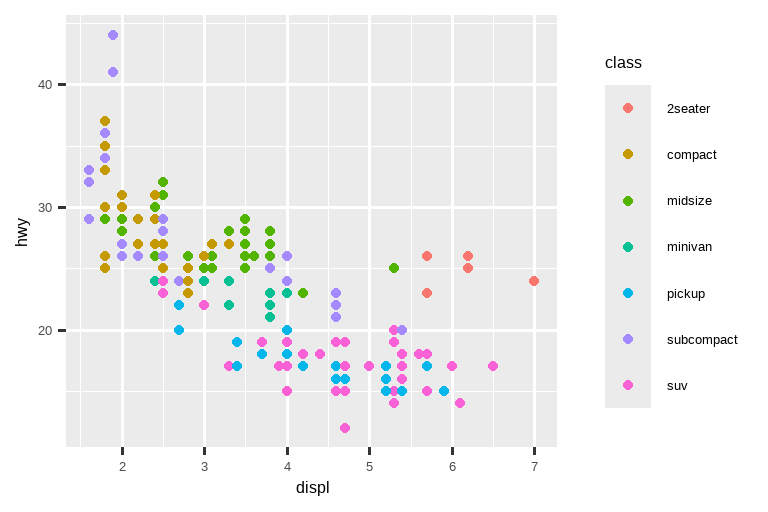
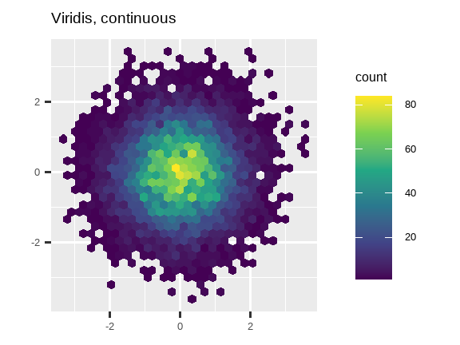
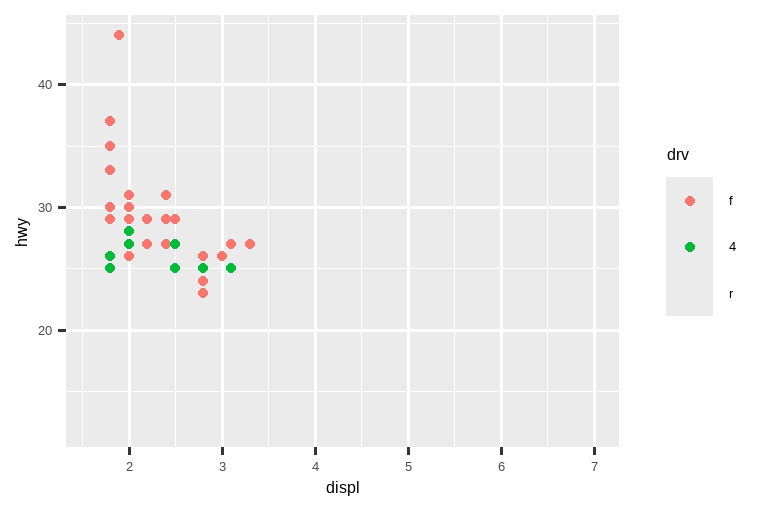

11 沟通
11.1 引言
在 Chapter 10 中，你学习了如何将绘图作为探索的工具。当你制作探索性图表时，你甚至在看图之前就知道它将显示哪些变量。你为每个图表的制作都带有目的，可以快速查看，然后转向下一个图表。在大多数分析过程中，你会生成数十甚至数百个图表，其中大部分会被立即丢弃。
现在你已经理解了你的数据，你需要将你的理解传达给他人。你的受众可能不具备你的背景知识，也不会对数据投入很深。为了帮助他人快速建立对数据的良好心智模型，你需要投入大量精力，让你的图表尽可能地不言自明。在本章中，你将学习 ggplot2 为此提供的一些工具。
本章重点介绍创建优质图形所需的工具。我们假设你知道自己想要什么，只需要知道如何实现它。因此，我们强烈建议将本章与一本优秀的通用可视化书籍结合起来阅读。我们特别喜欢 Albert Cairo 的 The Truthful Art。这本书不教创建可视化的具体方法，而是侧重于为了创建有效的图形你需要思考什么。
11.1.1 先决条件
在本章中，我们将再次重点关注 ggplot2。我们还将使用一些 dplyr 进行数据处理，使用 scales 包来覆盖默认的刻度、标签、转换和调色板，以及一些 ggplot2 扩展包，包括 Kamil Slowikowski 的 ggrepel (https://ggrepel.slowkow.com) 和 Thomas Lin Pedersen 的 patchwork (https://patchwork.data-imaginist.com)。如果你还没有安装这些包，别忘了用 install.packages() 来安装它们。
11.2 标签
将探索性图表转变为说明性图表时，最简单的入手点就是使用好的标签。你可以使用 labs() 函数添加标签。
ggplot(mpg, aes(x = displ, y = hwy)) +
geom_point(aes(color = class)) +
geom_smooth(se = FALSE) +
labs(
x = "发动机排量 (L)",
y = "高速公路燃油经济性 (mpg)",
color = "汽车类型",
title = "燃油效率通常随发动机尺寸的增大而降低",
subtitle = "双座车（跑车）因其重量轻而成为例外",
caption = "数据来自 fueleconomy.gov"
)图表标题的目的是总结主要发现。避免使用仅仅描述图表内容的标题，例如“发动机排量与燃油经济性的散点图”。
如果你需要添加更多文本，还有另外两个有用的标签：subtitle 会在标题下方用较小的字体添加额外细节，而 caption 会在图表右下角添加文本，通常用于描述数据来源。你也可以使用 labs() 来替换坐标轴和图例的标题。通常，用更详细的描述替换简短的变量名，并包含单位，是一个好主意。
除了文本字符串，还可以使用数学表达式。只需将 "" 换成 quote()，并在 ?plotmath 中阅读可用的选项：
df <- tibble(
x = 1:10,
y = cumsum(x^2)
)
ggplot(df, aes(x, y)) +
geom_point() +
labs(
x = quote(x[i]),
y = quote(sum(x[i] ^ 2, i == 1, n))
)
11.2.1 练习
使用燃油经济性数据创建一张图，并自定义
title、subtitle、caption、x、y和color标签。-
使用燃油经济性数据重新创建下图。请注意，点的颜色和形状都随驱动系统类型而变化。
找一个你在上个月创建的探索性图表，并为其添加信息丰富的标题，以便他人更容易理解。
11.3 注释
除了为图表的主要组成部分添加标签外，为单个观测或观测组添加标签也常常很有用。你可以使用的第一个工具是 geom_text()。geom_text() 类似于 geom_point()，但它有一个额外的美学属性：label。这使得在图表中添加文本标签成为可能。
标签有两个可能的来源。首先，你可能有一个提供标签的 tibble。在下面的图表中，我们筛选出每种驱动类型中发动机尺寸最大的汽车，并将其信息保存为一个名为 label_info 的新数据框。
label_info <- mpg |>
group_by(drv) |>
arrange(desc(displ)) |>
slice_head(n = 1) |>
mutate(
drive_type = case_when(
drv == "f" ~ "前轮驱动",
drv == "r" ~ "后轮驱动",
drv == "4" ~ "四轮驱动"
)
) |>
select(displ, hwy, drv, drive_type)
label_info
#> # A tibble: 3 × 4
#> # Groups: drv [3]
#> displ hwy drv drive_type
#> <dbl> <int> <chr> <chr>
#> 1 6.5 17 4 四轮驱动
#> 2 5.3 25 f 前轮驱动
#> 3 7 24 r 后轮驱动然后，我们使用这个新的数据框直接标记这三个组，用直接放置在图上的标签来替换图例。通过使用 fontface 和 size 参数，我们可以自定义文本标签的外观。它们比图上的其他文本更大，并且是粗体的。（theme(legend.position = "none") 会关闭所有图例 —— 我们稍后会更详细地讨论它。）
ggplot(mpg, aes(x = displ, y = hwy, color = drv)) +
geom_point(alpha = 0.3) +
geom_smooth(se = FALSE) +
geom_text(
data = label_info,
aes(x = displ, y = hwy, label = drive_type),
fontface = "bold", size = 5, hjust = "right", vjust = "bottom"
) +
theme(legend.position = "none")
#> `geom_smooth()` using method = 'loess' and formula = 'y ~ x'注意使用 hjust (水平对齐) 和 vjust (垂直对齐) 来控制标签的对齐方式。
然而，我们上面制作的带注释的图表很难阅读，因为标签之间以及标签与点之间存在重叠。我们可以使用 ggrepel 包中的 geom_label_repel() 函数来解决这两个问题。这个有用的包会自动调整标签，使其不重叠：
ggplot(mpg, aes(x = displ, y = hwy, color = drv)) +
geom_point(alpha = 0.3) +
geom_smooth(se = FALSE) +
geom_label_repel(
data = label_info,
aes(x = displ, y = hwy, label = drive_type),
fontface = "bold", size = 5, nudge_y = 2
) +
theme(legend.position = "none")
#> `geom_smooth()` using method = 'loess' and formula = 'y ~ x'你也可以用同样的方法，使用 ggrepel 包中的 geom_text_repel() 来突出图上的某些点。注意这里使用的另一个便捷技巧：我们添加了第二层大的空心点，以进一步突出被标记的点。
potential_outliers <- mpg |>
filter(hwy > 40 | (hwy > 20 & displ > 5))
ggplot(mpg, aes(x = displ, y = hwy)) +
geom_point() +
geom_text_repel(data = potential_outliers, aes(label = model)) +
geom_point(data = potential_outliers, color = "red") +
geom_point(
data = potential_outliers,
color = "red", size = 3, shape = "circle open"
)记住，除了 geom_text() 和 geom_label()，ggplot2 中还有许多其他几何对象可以帮助你注释图表。一些想法：
使用
geom_hline()和geom_vline()添加参考线。我们通常让它们变粗 (linewidth = 2) 并且是白色的 (color = white)，然后将它们绘制在主数据层的下方。这样它们很容易看到，又不会分散对数据的注意力。使用
geom_rect()在感兴趣的点周围绘制一个矩形。矩形的边界由美学属性xmin、xmax、ymin、ymax定义。或者，可以研究一下 ggforce 包，特别是geom_mark_hull()，它允许你用凸包来注释点的子集。使用带
arrow参数的geom_segment()，用箭头来吸引对某个点的注意。使用美学属性x和y定义起始位置，xend和yend定义结束位置。
另一个用于向图表添加注释的便捷函数是 annotate()。根据经验，几何对象 (geom) 通常用于高亮数据的子集，而 annotate() 则用于向图表添加一个或少数几个注释元素。
为了演示 annotate() 的用法，让我们创建一些要添加到图表中的文本。这段文本有点长，所以我们将使用 stringr::str_wrap()，根据你想要的每行字符数来自动为其添加换行符：
trend_text <- "Larger engine sizes tend to have lower fuel economy." |>
str_wrap(width = 30)
trend_text
#> [1] "Larger engine sizes tend to\nhave lower fuel economy."然后，我们添加两层注释：一层使用标签几何对象 (label geom)，另一层使用线段几何对象 (segment geom)。两者中的 x 和 y 美学属性定义了注释的起始位置，而线段注释中的 xend 和 yend 美学属性定义了线段的结束位置。另请注意，该线段被样式化为箭头。
ggplot(mpg, aes(x = displ, y = hwy)) +
geom_point() +
annotate(
geom = "label", x = 3.5, y = 38,
label = trend_text,
hjust = "left", color = "red"
) +
annotate(
geom = "segment",
x = 3, y = 35, xend = 5, yend = 25, color = "red",
arrow = arrow(type = "closed")
)注释是传达可视化主要结论和有趣特征的强大工具。唯一的限制是你的想象力（以及你为使注释美观而定位它们的耐心）！
11.3.1 练习
使用
geom_text()和无限大的位置，将文本放置在图表的四个角上。使用
annotate()在你上一张图的中间添加一个点几何对象，而无需创建一个 tibble。自定义该点的形状、大小或颜色。geom_text()的标签如何与分面 (faceting) 交互？你如何为一个单独的分面添加标签？你如何在每个分面中放置不同的标签？（提示：考虑传递给geom_text()的数据集。）geom_label()的哪些参数控制背景框的外观？arrow()的四个参数是什么？它们如何工作？创建一系列图表来演示最重要的选项。
11.4 标度
让你的图表更适合沟通的第三种方法是调整标度 (scales)。标度控制了美学映射如何以视觉方式呈现。
11.4.1 默认标度
通常，ggplot2 会自动为你添加标度。例如，当你输入：
ggplot(mpg, aes(x = displ, y = hwy)) +
geom_point(aes(color = class))ggplot2 会在后台自动添加默认标度：
ggplot(mpg, aes(x = displ, y = hwy)) +
geom_point(aes(color = class)) +
scale_x_continuous() +
scale_y_continuous() +
scale_color_discrete()注意标度的命名方案：scale_ 后跟美学名称，然后是 _，再后跟标度名称。默认标度根据它们所对应的变量类型来命名：连续型 (continuous)、离散型 (discrete)、日期时间型 (datetime) 或日期型 (date)。scale_x_continuous() 将 displ 的数值放在 x 轴的连续数轴上，scale_color_discrete() 为每种汽车的 class 选择颜色，等等。下面你将学到许多非默认的标度。
默认标度经过精心挑选，能在各种输入下表现良好。尽管如此，你可能还是想覆盖默认设置，原因有二：
你可能想微调默认标度的一些参数。这允许你做一些事情，比如改变坐标轴上的刻度，或者图例上的键标签。
你可能想完全替换掉标度，使用一种完全不同的算法。通常你可以做得比默认更好，因为你对数据有更多的了解。
11.4.2 坐标轴刻度和图例键
坐标轴和图例统称为引导 (guides)。坐标轴用于 x 和 y 美学；图例用于其他所有美学。
有两个主要参数会影响坐标轴上刻度的外观和图例上键的外观：breaks 和 labels。Breaks 控制刻度的位置，或与键相关联的值。Labels 控制与每个刻度/键相关联的文本标签。breaks 最常见的用途是覆盖默认选择：
ggplot(mpg, aes(x = displ, y = hwy, color = drv)) +
geom_point() +
scale_y_continuous(breaks = seq(15, 40, by = 5)) 你可以用同样的方式使用 labels（一个与 breaks 长度相同的字符向量），但你也可以将其设置为 NULL 来完全抑制标签。这对于地图，或者在不能分享绝对数值的情况下发布图表时很有用。你也可以使用 breaks 和 labels 来控制图例的外观。对于分类变量的离散标度，labels 可以是一个命名列表，包含现有的级别名称和它们期望的标签。
ggplot(mpg, aes(x = displ, y = hwy, color = drv)) +
geom_point() +
scale_x_continuous(labels = NULL) +
scale_y_continuous(labels = NULL) +
scale_color_discrete(labels = c("4" = "四轮", "f" = "前轮", "r" = "后轮"))labels 参数与 scales 包中的标签函数相结合，对于将数字格式化为货币、百分比等也很有用。左边的图显示了使用 label_dollar() 的默认标签，它添加了美元符号以及千位分隔符逗号。右边的图通过将美元值除以 1000 并添加后缀 “K”（代表 “千”）以及添加自定义刻度，进行了进一步的定制。注意 breaks 是在数据的原始标度上。
# 左图
ggplot(diamonds, aes(x = price, y = cut)) +
geom_boxplot(alpha = 0.05) +
scale_x_continuous(labels = label_dollar())
# 右图
ggplot(diamonds, aes(x = price, y = cut)) +
geom_boxplot(alpha = 0.05) +
scale_x_continuous(
labels = label_dollar(scale = 1/1000, suffix = "K"),
breaks = seq(1000, 19000, by = 6000)
)
另一个方便的标签函数是 label_percent():
ggplot(diamonds, aes(x = cut, fill = clarity)) +
geom_bar(position = "fill") +
scale_y_continuous(name = "百分比", labels = label_percent())breaks 的另一个用途是当你数据点相对较少，并想确切地突出显示观测发生的位置时。例如，看这张图，它显示了每位美国总统任期的开始和结束时间。
presidential |>
mutate(id = 33 + row_number()) |>
ggplot(aes(x = start, y = id)) +
geom_point() +
geom_segment(aes(xend = end, yend = id)) +
scale_x_date(name = NULL, breaks = presidential$start, date_labels = "'%y")请注意，对于 breaks 参数，我们使用 presidential$start 提取了 start 变量作为向量，因为我们不能为这个参数进行美学映射。另请注意，日期和日期时间标度的 breaks 和 labels 的指定方式略有不同：
date_labels接受一个格式说明，其格式与parse_datetime()相同。date_breaks（此处未显示）接受一个像 “2 days” 或 “1 month” 这样的字符串。
11.4.3 图例布局
你最常使用 breaks 和 labels 来调整坐标轴。虽然它们也对图例起作用，但你更可能使用其他一些技巧。
要控制图例的整体位置，你需要使用 theme() 设置。我们将在本章末尾回到主题，但简而言之，它们控制图表的非数据部分。主题设置 legend.position 控制图例的绘制位置：
base <- ggplot(mpg, aes(x = displ, y = hwy)) +
geom_point(aes(color = class))
base + theme(legend.position = "right") # 默认
base + theme(legend.position = "left")
base +
theme(legend.position = "top") +
guides(color = guide_legend(nrow = 3))
base +
theme(legend.position = "bottom") +
guides(color = guide_legend(nrow = 3))
如果你的图表又短又宽，就把图例放在顶部或底部；如果它又高又窄，就把图例放在左侧或右侧。你也可以使用 legend.position = "none" 来完全抑制图例的显示。
要控制单个图例的显示，请使用 guides() 以及 guide_legend() 或 guide_colorbar()。下面的例子展示了两个重要的设置：使用 nrow 控制图例使用的行数，以及覆盖其中一个美学属性使点变大。如果你在一个图表上使用了较低的 alpha 来显示许多点，这尤其有用。
ggplot(mpg, aes(x = displ, y = hwy)) +
geom_point(aes(color = class)) +
geom_smooth(se = FALSE) +
theme(legend.position = "bottom") +
guides(color = guide_legend(nrow = 2, override.aes = list(size = 4)))
#> `geom_smooth()` using method = 'loess' and formula = 'y ~ x'11.4.4 替换标度
除了稍微调整细节，你还可以完全替换标度。你最可能想替换的两种标度是：连续位置标度和颜色标度。幸运的是，同样的原则也适用于所有其他美学，所以一旦你掌握了位置和颜色，你就能很快学会其他标度的替换。
对你的变量进行变换绘图非常有用。例如，如果我们对 carat 和 price 进行对数变换，就更容易看出它们之间的精确关系：
# 左图
ggplot(diamonds, aes(x = carat, y = price)) +
geom_bin2d()
# 右图
ggplot(diamonds, aes(x = log10(carat), y = log10(price))) +
geom_bin2d()
然而，这种变换的缺点是坐标轴现在用变换后的值来标记，这使得解读图表变得困难。我们可以在标度中进行变换，而不是在美学映射中进行。这在视觉上是完全相同的，除了坐标轴是用原始数据标度来标记的。
ggplot(diamonds, aes(x = carat, y = price)) +
geom_bin2d() +
scale_x_log10() +
scale_y_log10()另一个经常被定制的标度是颜色。默认的分类标度选择的颜色在色轮上均匀分布。有用的替代方案是 ColorBrewer 标度，这些标度经过手工调整，对有常见色盲类型的人更友好。下面的两张图看起来相似，但红色和绿色的色调有足够的差异，使得右边的点即使对于红绿色盲的人也能区分。1
ggplot(mpg, aes(x = displ, y = hwy)) +
geom_point(aes(color = drv))
ggplot(mpg, aes(x = displ, y = hwy)) +
geom_point(aes(color = drv)) +
scale_color_brewer(palette = "Set1")别忘了使用更简单的技巧来提高可访问性。如果只有几种颜色，你可以添加一个冗余的形状映射。这也有助于确保你的图表在黑白模式下也是可解释的。
ggplot(mpg, aes(x = displ, y = hwy)) +
geom_point(aes(color = drv, shape = drv)) +
scale_color_brewer(palette = "Set1")ColorBrewer 标度在 https://colorbrewer2.org/ 上有在线文档，并通过 Erich Neuwirth 的 RColorBrewer 包在 R 中可用。Figure 11.1 展示了所有调色板的完整列表。如果你的分类值是有序的，或者有一个“中间值”，那么顺序（顶部）和发散（底部）调色板特别有用。这种情况通常在你使用 cut() 将连续变量转换为分类变量时出现。
当你有一个预定义的值与颜色之间的映射时，使用 scale_color_manual()。例如，如果我们将总统党派映射到颜色，我们希望使用标准的映射，即红色代表共和党，蓝色代表民主党。分配这些颜色的一种方法是使用十六进制颜色代码：
presidential |>
mutate(id = 33 + row_number()) |>
ggplot(aes(x = start, y = id, color = party)) +
geom_point() +
geom_segment(aes(xend = end, yend = id)) +
scale_color_manual(values = c(Republican = "#E81B23", Democratic = "#00AEF3"))对于连续颜色，你可以使用内置的 scale_color_gradient() 或 scale_fill_gradient()。如果你有一个发散标度，你可以使用 scale_color_gradient2()。这允许你，例如，给正值和负值不同的颜色。如果你想区分高于或低于平均值的点，这有时也很有用。
另一个选择是使用 viridis 颜色标度。其设计者 Nathaniel Smith 和 Stéfan van der Walt 精心定制了连续颜色方案，这些方案对于各种形式色盲的人来说都是可感知的，并且在颜色和黑白模式下都是感知均匀的。这些标度在 ggplot2 中以连续 (c)、离散 (d) 和分箱 (b) 调色板的形式提供。
df <- tibble(
x = rnorm(10000),
y = rnorm(10000)
)
ggplot(df, aes(x, y)) +
geom_hex() +
coord_fixed() +
labs(title = "默认，连续", x = NULL, y = NULL)
ggplot(df, aes(x, y)) +
geom_hex() +
coord_fixed() +
scale_fill_viridis_c() +
labs(title = "Viridis, 连续", x = NULL, y = NULL)
ggplot(df, aes(x, y)) +
geom_hex() +
coord_fixed() +
scale_fill_viridis_b() +
labs(title = "Viridis, 分箱", x = NULL, y = NULL)
请注意，所有颜色标度都有两种变体：scale_color_*() 和 scale_fill_*()，分别用于 color 和 fill 美学（颜色标度同时提供英式和美式拼写）。
11.4.5 缩放
有三种方法可以控制图表的限制范围：
- 调整绘制的数据。
- 在每个标度中设置限制。
- 在
coord_cartesian()中设置xlim和ylim。
我们将在系列图表中演示这些选项。左边的图显示了发动机尺寸和燃油效率之间的关系，按驱动系统类型着色。右边的图显示了相同的变量，但对绘制的数据进行了子集化。对数据进行子集化影响了 x 和 y 轴的标度以及平滑曲线。
# 左图
ggplot(mpg, aes(x = displ, y = hwy)) +
geom_point(aes(color = drv)) +
geom_smooth()
# 右图
mpg |>
filter(displ >= 5 & displ <= 6 & hwy >= 10 & hwy <= 25) |>
ggplot(aes(x = displ, y = hwy)) +
geom_point(aes(color = drv)) +
geom_smooth()让我们将这些与下面的两张图进行比较，其中左边的图在单个标度上设置了 limits，而右边的图在 coord_cartesian() 中设置了它们。我们可以看到，缩小 limits 等同于对数据进行子集化。因此，要放大图表的某个区域，通常最好使用 coord_cartesian()。
# 左图
ggplot(mpg, aes(x = displ, y = hwy)) +
geom_point(aes(color = drv)) +
geom_smooth() +
scale_x_continuous(limits = c(5, 6)) +
scale_y_continuous(limits = c(10, 25))
# 右图
ggplot(mpg, aes(x = displ, y = hwy)) +
geom_point(aes(color = drv)) +
geom_smooth() +
coord_cartesian(xlim = c(5, 6), ylim = c(10, 25))另一方面，如果你想 扩展 限制范围，例如，为了在不同图表间匹配标度，在单个标度上设置 limits 通常更有用。例如，如果我们提取两种类型的汽车并分别绘制它们，很难比较这些图表，因为所有三个标度（x 轴、y 轴和颜色美学）的范围都不同。
suv <- mpg |> filter(class == "suv")
compact <- mpg |> filter(class == "compact")
# 左图
ggplot(suv, aes(x = displ, y = hwy, color = drv)) +
geom_point()
# 右图
ggplot(compact, aes(x = displ, y = hwy, color = drv)) +
geom_point()克服这个问题的一种方法是在多个图表之间共享标度，使用完整数据的 limits 来训练标度。
x_scale <- scale_x_continuous(limits = range(mpg$displ))
y_scale <- scale_y_continuous(limits = range(mpg$hwy))
col_scale <- scale_color_discrete(limits = unique(mpg$drv))
# 左图
ggplot(suv, aes(x = displ, y = hwy, color = drv)) +
geom_point() +
x_scale +
y_scale +
col_scale
# 右图
ggplot(compact, aes(x = displ, y = hwy, color = drv)) +
geom_point() +
x_scale +
y_scale +
col_scale
在这种特殊情况下，你可以简单地使用分面，但这种技术在更一般的情况下也很有用，例如，如果你想将图表分布在报告的多个页面上。
11.4.6 练习
-
为什么下面的代码没有覆盖默认的标度？
df <- tibble( x = rnorm(10000), y = rnorm(10000) ) ggplot(df, aes(x, y)) + geom_hex() + scale_color_gradient(low = "white", high = "red") + coord_fixed() 每个标度的第一个参数是什么？它与
labs()有何不同？-
通过以下方式更改总统任期的显示：
- 结合定制颜色和 x 轴刻度的两个变体。
- 改进 y 轴的显示。
- 用总统的名字标记每个任期。
- 添加信息丰富的图表标签。
- 每 4 年设置一个刻度（这比看起来要棘手！）。
-
首先，创建以下图表。然后，使用
override.aes修改代码，使图例更容易看清。ggplot(diamonds, aes(x = carat, y = price)) + geom_point(aes(color = cut), alpha = 1/20)
11.5 主题
最后，你可以使用主题 (theme) 来自定义图表的非数据元素：
ggplot(mpg, aes(x = displ, y = hwy)) +
geom_point(aes(color = class)) +
geom_smooth(se = FALSE) +
theme_bw()ggplot2 包含了 Figure 11.2 中显示的八个主题，其中 theme_gray() 是默认主题。2 更多的主题包含在附加包中，如 Jeffrey Arnold 的 ggthemes (https://jrnold.github.io/ggthemes)。如果你试图匹配特定的公司或期刊风格，你也可以创建自己的主题。

也可以控制每个主题的单个组件，比如 y 轴使用的字体大小和颜色。我们已经看到 legend.position 控制图例的绘制位置。还有许多其他图例方面可以通过 theme() 进行自定义。例如，在下面的图中，我们改变了图例的方向，并给它加上了黑色的边框。注意，图例框和图表标题元素的自定义是通过 element_*() 函数完成的。这些函数指定了非数据组件的样式，例如，标题文本在 element_text() 的 face 参数中被加粗，图例边框颜色在 element_rect() 的 color 参数中定义。控制标题和脚注位置的主题元素分别是 plot.title.position 和 plot.caption.position。在下面的图中，这些被设置为 "plot"，表示这些元素与整个绘图区域对齐，而不是绘图面板（默认）。还使用了一些其他有用的 theme() 组件来更改标题和脚注文本的位置或格式。
ggplot(mpg, aes(x = displ, y = hwy, color = drv)) +
geom_point() +
labs(
title = "发动机尺寸越大，燃油经济性越低",
caption = "来源: https://fueleconomy.gov."
) +
theme(
legend.position = c(0.6, 0.7),
legend.direction = "horizontal",
legend.box.background = element_rect(color = "black"),
plot.title = element_text(face = "bold"),
plot.title.position = "plot",
plot.caption.position = "plot",
plot.caption = element_text(hjust = 0)
)
#> Warning: A numeric `legend.position` argument in `theme()` was deprecated in ggplot2
#> 3.5.0.
#> ℹ Please use the `legend.position.inside` argument of `theme()` instead.有关所有 theme() 组件的概述，请参阅 ?theme 的帮助文档。ggplot2 book 也是了解主题全部细节的好去处。
11.5.1 练习
- 从 ggthemes 包中选择一个主题，并将其应用于你制作的最后一张图。
- 将你的图表的坐标轴标签设置为蓝色和粗体。
11.6 布局
到目前为止，我们讨论了如何创建和修改单个图表。如果你有多个图表，并希望以某种方式将它们布局，该怎么办？patchwork 包允许你将单独的图表组合成同一个图形。我们在本章前面加载了这个包。
要将两个图表并排放置，你可以简单地将它们相加。注意，你首先需要创建图表并将它们保存为对象（在下面的例子中，它们被称为 p1 和 p2）。然后，你用 + 将它们并排。
p1 <- ggplot(mpg, aes(x = displ, y = hwy)) +
geom_point() +
labs(title = "图 1")
p2 <- ggplot(mpg, aes(x = drv, y = hwy)) +
geom_boxplot() +
labs(title = "图 2")
p1 + p2值得注意的是，在上面的代码块中，我们没有使用 patchwork 包的新函数。相反，该包为 + 运算符添加了新功能。
你也可以用 patchwork 创建复杂的图表布局。在下面，| 将 p1 和 p3 并排放置，而 / 将 p2 移动到下一行。
p3 <- ggplot(mpg, aes(x = cty, y = hwy)) +
geom_point() +
labs(title = "图 3")
(p1 | p3) / p2此外，patchwork 允许你将多个图表的图例收集到一个公共图例中，自定义图例的位置以及图表的尺寸，并为你的图表添加一个共同的标题、副标题、脚注等。下面我们创建 5 张图。我们关闭了箱线图和散点图的图例，并用 & theme(legend.position = "top") 将密度图的图例收集到图表的顶部。注意这里使用了 & 运算符而不是通常的 +。这是因为我们正在修改 patchwork 图的主题，而不是单个 ggplot 对象。图例被放置在顶部，在 guide_area() 内部。最后，我们还自定义了 patchwork 中各个组件的高度——引导区高度为 1，箱线图为 3，密度图为 2，分面散点图为 4。Patchwork 使用这个比例来划分你为图表分配的区域，并相应地放置组件。
p1 <- ggplot(mpg, aes(x = drv, y = cty, color = drv)) +
geom_boxplot(show.legend = FALSE) +
labs(title = "图 1")
p2 <- ggplot(mpg, aes(x = drv, y = hwy, color = drv)) +
geom_boxplot(show.legend = FALSE) +
labs(title = "图 2")
p3 <- ggplot(mpg, aes(x = cty, color = drv, fill = drv)) +
geom_density(alpha = 0.5) +
labs(title = "图 3")
p4 <- ggplot(mpg, aes(x = hwy, color = drv, fill = drv)) +
geom_density(alpha = 0.5) +
labs(title = "图 4")
p5 <- ggplot(mpg, aes(x = cty, y = hwy, color = drv)) +
geom_point(show.legend = FALSE) +
facet_wrap(~drv) +
labs(title = "图 5")
(guide_area() / (p1 + p2) / (p3 + p4) / p5) +
plot_annotation(
title = "不同驱动方式汽车的城市和高速公路里程",
caption = "来源: https://fueleconomy.gov."
) +
plot_layout(
guides = "collect",
heights = c(1, 3, 2, 4)
) &
theme(legend.position = "top")如果你想了解更多关于用 patchwork 组合和布局多个图表的信息，我们建议你浏览该包网站上的指南：https://patchwork.data-imaginist.com。
11.6.1 练习
-
如果在下面的图表布局中省略括号，会发生什么？你能解释为什么会这样吗？
p1 <- ggplot(mpg, aes(x = displ, y = hwy)) + geom_point() + labs(title = "图 1") p2 <- ggplot(mpg, aes(x = drv, y = hwy)) + geom_boxplot() + labs(title = "图 2") p3 <- ggplot(mpg, aes(x = cty, y = hwy)) + geom_point() + labs(title = "图 3") (p1 | p2) / p3 -
使用上一个练习中的三张图，重新创建下面的 patchwork。
11.7 总结
在本章中，你学习了如何添加图表标签，如标题、副标题、脚注，以及如何修改默认的坐标轴标签，如何使用注释为你的图表添加信息性文本或突出显示特定数据点，如何自定义坐标轴标度，以及如何更改图表的主题。你还学习了如何使用简单和复杂的图表布局将多个图表组合成一个单一的图形。
虽然到目前为止你已经学会了如何制作许多不同类型的图表以及如何使用各种技术来定制它们，但我们仅仅触及了你能用 ggplot2 创造的东西的皮毛。如果你想全面了解 ggplot2，我们推荐阅读 ggplot2: Elegant Graphics for Data Analysis 这本书。其他有用的资源包括 Winston Chang 的 R Graphics Cookbook 和 Claus Wilke 的 Fundamentals of Data Visualization。
你可以使用像 SimDaltonism 这样的工具来模拟色盲，以测试这些图像。↩︎
很多人想知道为什么默认主题有一个灰色的背景。这是一个故意的选择，因为它既突出了数据，又使网格线可见。白色的网格线是可见的（这很重要，因为它们显著地辅助了位置判断），但它们的视觉影响很小，我们可以轻易地忽略它们。灰色的背景使图表具有与文本相似的排版颜色，确保图形与文档的流程融为一体，而不会因为明亮的白色背景而跳脱出来。最后，灰色的背景创造了一个连续的颜色区域，确保图表被感知为一个单一的视觉实体。↩︎